79th Meeting of the APS Division of Fluid Dynamics
Session Q26 — Turbulence: Theory
November 22–24, 2026, Orlando, FL
Miguel P. Encinar
Homogeneous Isotropic Turbulence at $Re_\lambda\approx300$
Grant PID2024-161656NA-I00 funded by
Data Assimilation is a field of growing importance in practical applications, from the “control” problem, to prediction of chaotic flows (e.g. weather, ocean currents).
In research and engineering it offers the prospect of combining experimental data with numerical simulations, mitigating the weaknesses of each.
Data assimilation can be leveraged for physical discovery [Yoshida et al. 2005; Lalescu et al. 2013]. It is an intrusive technique that allows asking which regions of the flow carry the information required to reconstruct the rest [Di Leoni et al. 2020].
This work set out to compare Vortex Stretching (VS) against Strain Self Amplification (SSA) [Johnson 2020; Encinar 2023]. That has proven not to be possible with this method*.
✗Assimilation failed at distinguish VS from SSA.
✓What it does separates, clearly, is vorticity from strain.
$\boldsymbol{f}$ injects constant energy in the largest wavenumbers
Incompressible N–S :: Triply periodic HIT :: $N=128^3,\,256^3,\,512^3$ :: $k\eta_{max}=1.5$ :: $Re_\lambda\approx104,\,169,\,275$
Surrogates have no explicit driving term
$\alpha$ controls the intensity of the driving force
$M$ is a mask, 0 or 1 depending on the region of the flow and the time
$M(\boldsymbol{x},t)$ is built in three steps:
Pink shadingTurbulent kinetic energy
Blue mask (Enstrophy)$\phi=0.1,\quad I=|\omega|$
$\Delta=20\eta,\quad \alpha\to\infty$
Yellow mask (SSA)$\phi=0.1,\quad I=-SSS$
$\Delta=20\eta,\quad \alpha\to\infty$
The masks occupy the full volume; only the background is shown, for clarity
Let us measure the error of the reconstruction
Varying the volume fraction $\phi$
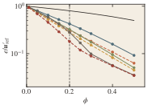
Varying the filter width $\Delta$
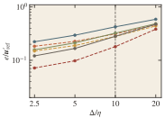
vorticity $\omega_i\omega_i$, $\omega_iS_{ij}\omega_j\!>\!0$, $\omega_iS_{ij}\omega_j\!<\!0$ strain $S_{ij}S_{ij}$, $-S_{ij}S_{jk}S_{ki}\!>\!0$, $-S_{ij}S_{jk}S_{ki}\!<\!0$
Vorticity-based masks leave more error than strain-based ones. (And triple-products are better)
Parameters move the level, but roughtly respect the ordering. Nudging and direct assimilation agree, so only $\alpha\to\infty$ is shown
What about $Re_\lambda$?
$\Delta/\eta\approx10$ (Kolmogorov units)
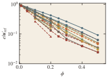
$L_E/\Delta\approx22$ (integral units)
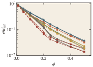
vorticity $\omega_i\omega_i$, $\omega_iS_{ij}\omega_j\!>\!0$, $\omega_iS_{ij}\omega_j\!<\!0$ strain $S_{ij}S_{ij}$, $-S_{ij}S_{jk}S_{ki}\!>\!0$, $-S_{ij}S_{jk}S_{ki}\!<\!0$
For the Three Reynolds numbers shown, the ordering is robust, and roughly collapses in filter widths proportional to the integral scale
Is it the flow, or just the shape of the mask?
The masks differ in how fast (and how thick) they are
Error vs. correlation time
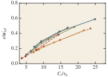
Error of the decorrelated twins
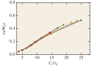
vorticity $\omega_i\omega_i$, $\omega_iS_{ij}\omega_j\!>\!0$, $\omega_iS_{ij}\omega_j\!<\!0$ strain $S_{ij}S_{ij}$, $-S_{ij}S_{jk}S_{ki}\!>\!0$, $-S_{ij}S_{jk}S_{ki}\!<\!0$
Triple products are smaller, faster versions of double ones.
The only surving difference is strain vs vorticity.
Decorrelating the masks collapses them. The difference is in flow, not in the mask
So where does the error come from?
In steady state, the assimilation error balance reads,
Production and dissipation
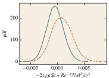
Transport of error
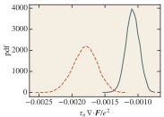
$\phi=0.2$, $\Delta/\eta=10$ · enstrophy and dissipation masks · long-time averages, rates per $\tau_\eta$, each normalised with its own $e^2$
Work of the forcing
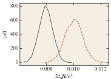
Work of the assimilation
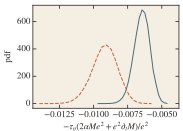
$\phi=0.2$, $\Delta/\eta=10$ · enstrophy and dissipation masks · long-time averages, rates per $\tau_\eta$, each normalised with its own $e^2$
The budget is forcing vs assimilation+fluxes.
The strain mask produces more error, not less!!
Per unit of error, the strain mask removes 42% more than the vorticity one
The mask has the same (or worse) surface area and sweeping velocity — so what makes its sweeping stronger?
Alignment of velocity and mask normal
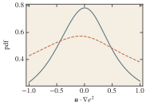
enstrophy and dissipation masks · in a band of $3.6\eta$ around $\partial M$
What differs is transport: around vortices the flow slides along the mask boundary, so it carries 3.6$\times$ less error across it
We assimilate HIT on excursion sets of strain and vorticity, at three Reynolds numbers and over wide ranges of $\Delta$, $\phi$ and $\alpha$.
Vorticity-based masks are consistently worse observables than strain-based ones. Vortex stretching and strain self-amplification cannot be separated this way: their excursion sets are those of vorticity and strain.
Decorrelating the masks collapses the six curves: the trends with $\Delta$ and $\phi$ are geometry. What is left is the excess over each mask’s own control: up to 80% worse for vorticity, on par or better for strain.
The error budget is forcing produces error, assimilation kills it. Strain masks remove error faster, but not by suppressing its production.
Intense vorticity regions are dynamically "isolated" from the rest of the flow
Thank you for listening!
Questions?
Every excursion set, its spatial correlation scale against its temporal one
Correlation in space vs. in time
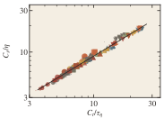
vorticity $\omega_i\omega_i$, $\omega_iS_{ij}\omega_j\!>\!0$, $\omega_iS_{ij}\omega_j\!<\!0$ strain $S_{ij}S_{ij}$, $-S_{ij}S_{jk}S_{ki}\!>\!0$, $-S_{ij}S_{jk}S_{ki}\!<\!0$
Vorticity masks do up to 80% worse than their randomised twins; strain ones match or beat theirs
Real / decorrelated · marker = $\Delta$
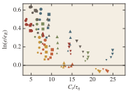
vorticity $\omega_i\omega_i$, $\omega_iS_{ij}\omega_j\!>\!0$, $\omega_iS_{ij}\omega_j\!<\!0$ strain $S_{ij}S_{ij}$, $-S_{ij}S_{jk}S_{ki}\!>\!0$, $-S_{ij}S_{jk}S_{ki}\!<\!0$
Both masks put the error in the compressive direction — the strain one produces more, not less
Error vs. compressive strain
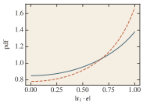
enstrophy and dissipation masks · in $\neg M$